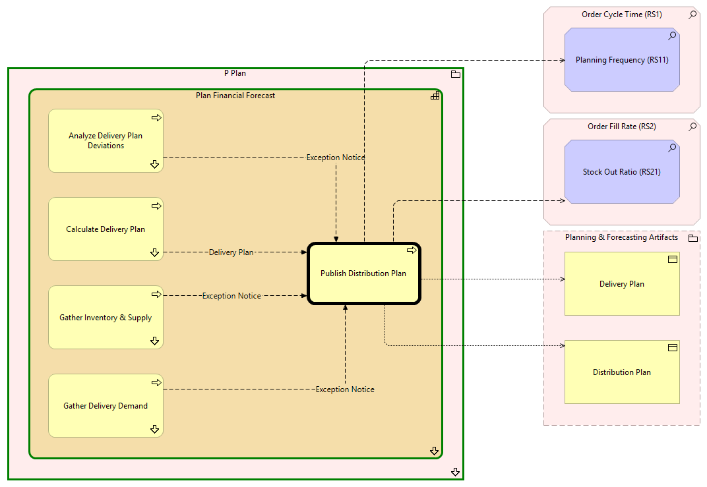

Publish Distribution Plan - Context
(
)

generated_by
build_archi_xml.py::gen_proc_node_context_view
generator_path
pedro/capabilities/build_archi_xml_assign/build_archi_xml_assign.py
run_at
2026-10-19T21:05:21
view_type
process_context
P Plan
Plan Financial Forecast
Gather Delivery Demand
Gather Delivery Demand - Context
Calculate Delivery Plan
Calculate Delivery Plan - Context
Analyze Delivery Plan Deviations
Analyze Delivery Plan Deviations - Context
Publish Distribution Plan
Gather Inventory & Supply
Gather Inventory & Supply - Context
Plan Financial Forecast - Processes
P Plan - Processes
Order Cycle Time (RS1)
Planning Frequency (RS11)
Order Fill Rate (RS2)
Stock Out Ratio (RS21)
Planning & Forecasting Artifacts
Distribution Plan
Delivery Plan
Exception Notice
Gather Delivery Demand
Publish Distribution Plan
Delivery Plan
Calculate Delivery Plan
Publish Distribution Plan
Exception Notice
Analyze Delivery Plan Deviations
Publish Distribution Plan
Publish Distribution Plan
Planning Frequency (RS11)
Publish Distribution Plan
Stock Out Ratio (RS21)
Publish Distribution Plan
Distribution Plan
Publish Distribution Plan
Delivery Plan
Exception Notice
Gather Inventory & Supply
Publish Distribution Plan